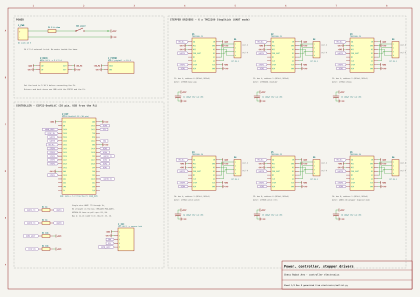
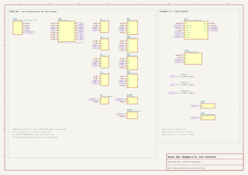
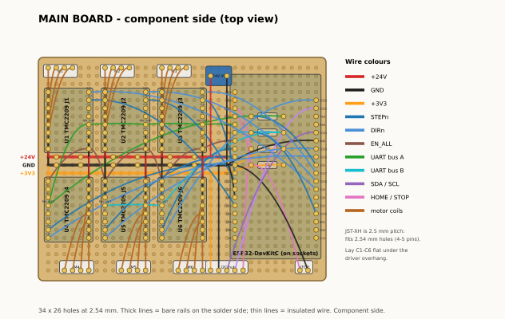
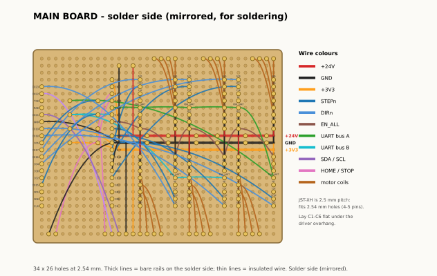

<meta charset="utf-8">
<title>Chess Arm Build Docs</title>
<meta name="claude:viewport-fit-sides" content="cover">
<link rel="stylesheet" href="https://fonts.googleapis.com/css2?family=IBM+Plex+Sans+Condensed:wght@500;600&family=IBM+Plex+Sans:wght@400;500;600&family=IBM+Plex+Mono:wght@400;500&display=swap">
<style>
/* Layout: sticky header with three tabs; each tab is a two-column workspace (index left, paper viewer right) that stacks on phones */
:root{
  --paper:#F2F4F1; --plate:#FBFCFA; --ink:#1C2320; --muted:#5D6A64; --rule:#CCD4CF; --arm:#0E6B66; --arm-soft:#0E6B6614; --hot:#B9770E;
  --sheet:#ffffff; --shadow:0 1px 2px #0002, 0 6px 24px #0001;
  --display:"IBM Plex Sans Condensed","Arial Narrow",sans-serif; --body:"IBM Plex Sans",system-ui,sans-serif; --mono:"IBM Plex Mono",ui-monospace,monospace;
}
@media (prefers-color-scheme:dark){:root:not([data-theme="light"]){--paper:#111614;--plate:#171D1A;--ink:#E3EAE6;--muted:#93A29B;--rule:#2D3833;--arm:#46C4B9;--arm-soft:#46C4B91f;--hot:#E6B44A;--sheet:#f4f4f1;--shadow:0 1px 2px #0006,0 6px 24px #0004;color-scheme:dark}}
:root[data-theme="dark"]{--paper:#111614;--plate:#171D1A;--ink:#E3EAE6;--muted:#93A29B;--rule:#2D3833;--arm:#46C4B9;--arm-soft:#46C4B91f;--hot:#E6B44A;--sheet:#f4f4f1;--shadow:0 1px 2px #0006,0 6px 24px #0004;color-scheme:dark}
[hidden]{display:none!important}
body{background:var(--paper);color:var(--ink);font:15px/1.5 var(--body)}
body::before{content:"";position:fixed;inset:0 0 auto;height:env(safe-area-inset-top,0px);z-index:10;background:var(--plate)}
header{position:sticky;top:env(safe-area-inset-top,0px);z-index:5;background:var(--plate);border-bottom:1px solid var(--rule)}
.bar{max-width:1400px;margin:0 auto;padding-block:12px;padding-left:max(16px,env(safe-area-inset-left,0px));padding-right:max(16px,env(safe-area-inset-right,0px));display:flex;flex-wrap:wrap;gap:12px 24px;align-items:center}
h1{font:600 22px/1.1 var(--display);margin:0}
.eyebrow{font:500 11px/1 var(--mono);letter-spacing:.08em;text-transform:uppercase;color:var(--muted)}
nav{display:flex;gap:4px;flex-wrap:wrap}
nav a{font:500 14px/1 var(--body);color:var(--ink);text-decoration:none;padding:9px 14px;border-radius:999px;border:1px solid transparent}
nav a:hover{border-color:var(--rule)}
nav a[aria-current="page"]{background:var(--arm);color:var(--plate)}
main{max-width:1400px;margin:0 auto;padding-block:20px 48px;padding-left:max(16px,env(safe-area-inset-left,0px));padding-right:max(16px,env(safe-area-inset-right,0px))}
.work{display:grid;grid-template-columns:300px minmax(0,1fr);gap:20px;align-items:start}
@media (max-width:860px){.work{grid-template-columns:1fr}.index{max-height:260px}}
.index{background:var(--plate);border:1px solid var(--rule);border-radius:6px;max-height:calc(100vh - 140px);overflow:auto;position:sticky;top:90px}
.index h4{font:500 11px/1 var(--mono);letter-spacing:.08em;text-transform:uppercase;color:var(--muted);margin:14px 14px 6px}
.item{display:flex;gap:10px;align-items:center;padding:7px 14px;cursor:pointer;border-left:3px solid transparent}
.item:hover{background:var(--arm-soft)}
.item[aria-current="true"]{border-left-color:var(--arm);background:var(--arm-soft)}
.item .n{font:500 12px/1 var(--mono);color:var(--muted);min-width:22px;font-variant-numeric:tabular-nums}
.item .t{font-size:13.5px;line-height:1.3;flex:1;min-width:0}
.item input{accent-color:var(--arm);margin:0}
.item.done .t{color:var(--muted);text-decoration:line-through}
.rep{font:600 11px/1 var(--mono);color:var(--plate);background:var(--arm);border-radius:999px;padding:3px 6px}
.viewer{display:flex;flex-direction:column;gap:12px;min-width:0}
.sheet{background:var(--sheet);border-radius:4px;box-shadow:var(--shadow);overflow:hidden}
.sheet img{display:block;width:100%;height:auto}
.ctrl{display:flex;flex-wrap:wrap;gap:8px;align-items:center}
.ctrl .grow{flex:1}
button,.btn{font:500 13px/1 var(--mono);color:var(--ink);background:var(--plate);border:1px solid var(--rule);border-radius:4px;padding:9px 12px;cursor:pointer;text-decoration:none;display:inline-block}
button:hover,.btn:hover{border-color:var(--arm)}
button.primary{background:var(--arm);border-color:var(--arm);color:var(--plate)}
button:focus-visible,.btn:focus-visible,.item:focus-visible,nav a:focus-visible{outline:2px solid var(--hot);outline-offset:2px}
.pos{font:500 13px/1 var(--mono);color:var(--muted);font-variant-numeric:tabular-nums}
.stitle{font:600 20px/1.2 var(--display);margin:0}
.e-grid{display:flex;flex-direction:column;gap:28px}
.e-sec{display:flex;flex-direction:column;gap:10px}
.e-sec h2{font:600 22px/1.2 var(--display);margin:0}
.e-sec p{margin:0;max-width:70ch;color:var(--muted)}
.two{display:grid;grid-template-columns:1fr 1fr;gap:16px}
.two>*{min-width:0}
@media (max-width:860px){.two{grid-template-columns:1fr}}
.doc{background:var(--plate);border:1px solid var(--rule);border-radius:6px;padding:16px 20px}
.doc h3{font:600 17px/1.2 var(--display);margin:22px 0 8px}
.doc h3:first-child{margin-top:0}
.doc p{margin:6px 0;max-width:80ch}
.doc ul,.doc ol{margin:6px 0;padding-left:22px;max-width:80ch}
.tbl{overflow-x:auto;margin:8px 0}
table{border-collapse:collapse;font-size:13px;min-width:100%}
th,td{text-align:left;padding:6px 10px;border-bottom:1px solid var(--rule);white-space:nowrap}
th{font:500 11px/1.2 var(--mono);letter-spacing:.05em;text-transform:uppercase;color:var(--muted)}
td{font-variant-numeric:tabular-nums}
code{font-family:var(--mono);font-size:.92em}
details summary{cursor:pointer;font-weight:500}
.hint{font-size:13px;color:var(--muted)}
</style>

<header>
  <div class="bar">
    <div><div class="eyebrow">Rev D · generated from the CAD</div><h1>Chess Arm Build Docs</h1></div>
    <nav aria-label="Sections">
      <a href="#guide" data-tab="guide">Assembly guide</a>
      <a href="#drawings" data-tab="drawings">Drawings</a>
      <a href="#electronics" data-tab="electronics">Electronics</a>
    </nav>
  </div>
</header>

<main>
  <section id="tab-guide" class="work">
    <div class="index" id="g-index" aria-label="Steps"></div>
    <div class="viewer">
      <div class="ctrl">
        <button id="g-prev" aria-label="Previous step">← Prev</button>
        <button id="g-next" class="primary" aria-label="Next step">Next →</button>
        <span class="pos" id="g-pos"></span>
        <span class="grow"></span>
        <label class="hint"><input type="checkbox" id="g-done"> Step done</label>
        <a class="btn" href="guide/chess_arm_assembly_guide.pdf" target="_blank" rel="noopener">PDF</a>
      </div>
      <p class="stitle" id="g-title"></p>
      <div class="sheet"></div>
      <p class="hint">Arrow keys move between steps. New parts are black, parts already in place are grey. The hardware box shows each screw at actual size when the PDF is printed at 100 %.</p>
    </div>
  </section>

  <section id="tab-drawings" class="work" hidden>
    <div class="index" id="d-index" aria-label="Sheets"></div>
    <div class="viewer">
      <div class="ctrl">
        <button id="d-prev" aria-label="Previous sheet">← Prev</button>
        <button id="d-next" class="primary" aria-label="Next sheet">Next →</button>
        <span class="pos" id="d-pos"></span>
        <span class="grow"></span>
        <a class="btn" id="d-open" href="#" target="_blank" rel="noopener">Open full size</a>

      </div>
      <p class="stitle" id="d-title"></p>
      <div class="sheet"></div>
      <p class="hint">A3 sheets, third-angle projection, millimetres. Hidden edges dashed. Identical parts appear once with their quantity in the title block. The combined 51-page PDF is in the repo at docs/drawings/chess_arm_drawings.pdf.</p>
    </div>
  </section>

  <section id="tab-electronics" hidden>
    <div class="e-grid">
      <div class="e-sec">
        <h2>Schematic</h2>
        <p>Two sheets, KiCad style: parts connect through net labels with the same name. Sheet 1 covers power, the ESP32 and the six TMC2209 drivers. Sheet 2 covers the sensor hub, the Raspberry Pi 4 and the user interface.</p>
        <div class="sheet"><a href="electronics/schematic_1.svg" target="_blank" rel="noopener"></a></div>
        <div class="sheet"><a href="electronics/schematic_2.svg" target="_blank" rel="noopener"></a></div>
      </div>
      <div class="e-sec">
        <h2>Main board on perfboard (90 × 70 mm)</h2>
        <p>Component side and the mirrored solder side, hole for hole. Thick lines are bare rails on the solder side; thin lines are insulated wires. Every connection in the netlist is checked against these wires.</p>
        <div class="two">
          <div class="sheet"><a href="electronics/perfboard_top.svg" target="_blank" rel="noopener"></a></div>
          <div class="sheet"><a href="electronics/perfboard_bottom.svg" target="_blank" rel="noopener"></a></div>
        </div>
      </div>
      <div class="e-sec">
        <h2>Pin map</h2>
        <div class="doc"><p>Generated from <code>electronics/netlist.py</code> (the schematic and perfboard layout use the same file).</p>
<h3>ESP32-DevKitC (38 pin)</h3>
<div class='tbl'><table><thead><tr><th>Header</th><th>Pin</th><th>Function / net</th><th>Notes</th></tr></thead><tbody><tr><td>left</td><td>3V3</td><td>+3V3</td><td></td></tr><tr><td>left</td><td>EN</td><td>-</td><td></td></tr><tr><td>left</td><td>IO36</td><td>HOME_GRIP</td><td>input only, no internal pull-up</td></tr><tr><td>left</td><td>IO39</td><td>STOP_IN</td><td>input only, no internal pull-up</td></tr><tr><td>left</td><td>IO34</td><td>UARTA</td><td>input only</td></tr><tr><td>left</td><td>IO35</td><td>UARTB</td><td>input only</td></tr><tr><td>left</td><td>IO32</td><td>EN_ALL</td><td></td></tr><tr><td>left</td><td>IO33</td><td>STEP6</td><td></td></tr><tr><td>left</td><td>IO25</td><td>STEP5</td><td></td></tr><tr><td>left</td><td>IO26</td><td>STEP4</td><td></td></tr><tr><td>left</td><td>IO27</td><td>STEP3</td><td></td></tr><tr><td>left</td><td>IO14</td><td>STEP2</td><td></td></tr><tr><td>left</td><td>IO12</td><td>-</td><td>left free: must be low at boot</td></tr><tr><td>left</td><td>GND</td><td>GND</td><td></td></tr><tr><td>left</td><td>IO13</td><td>STEP1</td><td></td></tr><tr><td>left</td><td>SD2</td><td>-</td><td></td></tr><tr><td>left</td><td>SD3</td><td>-</td><td></td></tr><tr><td>left</td><td>CMD</td><td>-</td><td></td></tr><tr><td>left</td><td>5V</td><td>-</td><td>not used: the ESP32 is powered over USB from the Pi</td></tr><tr><td>right</td><td>GND</td><td>GND</td><td></td></tr><tr><td>right</td><td>IO23</td><td>DIR6</td><td></td></tr><tr><td>right</td><td>IO22</td><td>SCL</td><td></td></tr><tr><td>right</td><td>TX0</td><td>-</td><td>USB serial to the Pi</td></tr><tr><td>right</td><td>RX0</td><td>-</td><td>USB serial to the Pi</td></tr><tr><td>right</td><td>IO21</td><td>SDA</td><td></td></tr><tr><td>right</td><td>GND</td><td>GND</td><td></td></tr><tr><td>right</td><td>IO19</td><td>DIR5</td><td></td></tr><tr><td>right</td><td>IO18</td><td>DIR4</td><td></td></tr><tr><td>right</td><td>IO5</td><td>UARTA_TX</td><td>strapping pin, idles high: safe as UART TX</td></tr><tr><td>right</td><td>IO17</td><td>DIR3</td><td></td></tr><tr><td>right</td><td>IO16</td><td>DIR2</td><td></td></tr><tr><td>right</td><td>IO4</td><td>DIR1</td><td></td></tr><tr><td>right</td><td>IO0</td><td>-</td><td>left free: BOOT button</td></tr><tr><td>right</td><td>IO2</td><td>-</td><td>left free: on-board LED, boot strap</td></tr><tr><td>right</td><td>IO15</td><td>UARTB_TX</td><td>strapping pin, idles high: safe as UART TX</td></tr><tr><td>right</td><td>SD1</td><td>-</td><td></td></tr><tr><td>right</td><td>SD0</td><td>-</td><td></td></tr><tr><td>right</td><td>CLK</td><td>-</td><td></td></tr></tbody></table></div>
<h3>Stepper drivers (TMC2209, UART mode)</h3>
<div class='tbl'><table><thead><tr><th>Joint</th><th>Driver</th><th>STEP</th><th>DIR</th><th>UART bus</th><th>Address</th><th>MS1</th><th>MS2</th><th>Motor</th><th>Connector</th><th>Current (RMS)</th></tr></thead><tbody><tr><td>J1</td><td>U1</td><td>IO13</td><td>IO4</td><td>A (IO5 via 1k / IO34)</td><td>0</td><td>GND</td><td>GND</td><td>17HS08 base yaw</td><td>M1</td><td>0.7 A</td></tr><tr><td>J2</td><td>U2</td><td>IO14</td><td>IO16</td><td>A (IO5 via 1k / IO34)</td><td>1</td><td>3V3</td><td>GND</td><td>17HS8401 shoulder</td><td>M2</td><td>1.2 A</td></tr><tr><td>J3</td><td>U3</td><td>IO27</td><td>IO17</td><td>A (IO5 via 1k / IO34)</td><td>2</td><td>GND</td><td>3V3</td><td>17HS13 elbow</td><td>M3</td><td>0.9 A</td></tr><tr><td>J4</td><td>U4</td><td>IO26</td><td>IO18</td><td>A (IO5 via 1k / IO34)</td><td>3</td><td>3V3</td><td>3V3</td><td>17HS13 wrist pitch</td><td>M4</td><td>0.9 A</td></tr><tr><td>J5</td><td>U5</td><td>IO25</td><td>IO19</td><td>B (IO15 via 1k / IO35)</td><td>0</td><td>GND</td><td>GND</td><td>17HS08 wrist roll</td><td>M5</td><td>0.7 A</td></tr><tr><td>J6</td><td>U6</td><td>IO33</td><td>IO23</td><td>B (IO15 via 1k / IO35)</td><td>1</td><td>3V3</td><td>GND</td><td>28BYJ-48 gripper (bipolar mod)</td><td>M6</td><td>0.15 A</td></tr></tbody></table></div>
<p>All drivers share EN (IO32, active low). Motor connector pins: 1-2 = coil A, 3-4 = coil B.</p>
<p>Find the coil pairs with a multimeter (a few ohms between the two wires of one coil).</p>
<p>28BYJ-48: cut the PCB trace to the red wire; blue/pink = one coil, yellow/orange = the other.</p>
<h3>Raspberry Pi 4 (40-pin header)</h3>
<div class='tbl'><table><thead><tr><th>Pin</th><th>Signal</th><th>Net</th><th>Goes to</th></tr></thead><tbody><tr><td>1</td><td>3V3</td><td>+3V3_PI</td><td>OLED VCC</td></tr><tr><td>3</td><td>GPIO2 SDA1</td><td>PI_SDA</td><td>OLED SDA</td></tr><tr><td>5</td><td>GPIO3 SCL1</td><td>PI_SCL</td><td>OLED SCL</td></tr><tr><td>9</td><td>GND</td><td>GND</td><td>OLED GND, buttons</td></tr><tr><td>11</td><td>GPIO17</td><td>BTN_UP</td><td>button UP (to GND)</td></tr><tr><td>13</td><td>GPIO27</td><td>BTN_OK</td><td>button OK (to GND)</td></tr><tr><td>14</td><td>GND</td><td>GND</td><td>OLED GND, buttons</td></tr><tr><td>15</td><td>GPIO22</td><td>BTN_DOWN</td><td>button DOWN (to GND)</td></tr></tbody></table></div>
<p>USB-C: 5 V from the buck converter (pigtail). USB-A: ESP32 (serial + its power), webcam.</p>
<h3>Sensor hub (TCA9548A, address 0x70)</h3>
<div class='tbl'><table><thead><tr><th>Channel</th><th>Connector</th><th>Sensor</th></tr></thead><tbody><tr><td>SD0/SC0</td><td>S1</td><td>AS5600 J1</td></tr><tr><td>SD1/SC1</td><td>S2</td><td>AS5600 J2</td></tr><tr><td>SD2/SC2</td><td>S3</td><td>AS5600 J3</td></tr><tr><td>SD3/SC3</td><td>S4</td><td>AS5600 J4</td></tr></tbody></table></div>
<p>S5 = gripper home switch (HOME_GRIP, active low, 10k pull-up on the main board).</p>
<p>J_I2C (main board) &lt;-&gt; J_HUB (hub): 1 = +3V3, 2 = GND, 3 = SDA, 4 = SCL, 5 = HOME_GRIP.</p>
<h3>Power</h3>
<ul><li>24 V 5 A brick -&gt; panel jack -&gt; 5 A slow fuse -&gt; rocker switch -&gt; +24V.</li><li>+24V feeds the six drivers (VM, 100 µF each at the driver) and the buck converter.</li><li>Buck set to 5.1 V -&gt; USB-C pigtail -&gt; Pi. The Pi powers the ESP32 over USB; the ESP32&#x27;s 3.3 V feeds driver logic, hub and sensors.</li><li>One common ground for everything.</li></ul>
<h3>Bring-up order (no motors connected until step 5)</h3>
<ol><li>Continuity check: +24V, +3V3 and GND not shorted to each other.</li><li>Power the brick with no modules plugged in; check +24V on the rail and set the buck to 5.1 V.</li><li>Plug in the ESP32 only (USB from a PC): flash, check STEP/DIR toggle on a meter or LED.</li><li>Plug in the drivers (orientation!), power 24 V: read each driver&#x27;s version register over UART.</li><li>Only then connect one motor at a time, low current first. Never plug or unplug a motor with power on.</li></ol>
<p>Netlist check: 49 parts, 67 nets, problems: none.</p></div>
      </div>
      <div class="e-sec">
        <details class="doc"><summary>Wiring list for the perfboard (every wire, hole to hole)</summary><p>Hole coordinates are (column, row) from the top-left of the component side, 0-based.</p>
<div class='tbl'><table><thead><tr><th>#</th><th>Net</th><th>From</th><th>To</th><th>Wire</th></tr></thead><tbody><tr><td>1</td><td>+3V3</td><td>U_ESP.3V3 (23,3)</td><td>+3V3 rail (22,13)</td><td>insulated</td></tr><tr><td>2</td><td>+3V3</td><td>U1.VIO (0,4)</td><td>+3V3 rail (0,13)</td><td>insulated</td></tr><tr><td>3</td><td>+3V3</td><td>U2.VIO (7,4)</td><td>+3V3 rail (7,13)</td><td>insulated</td></tr><tr><td>4</td><td>+3V3</td><td>U2.MS1 (12,9)</td><td>+3V3 rail (12,13)</td><td>insulated</td></tr><tr><td>5</td><td>+3V3</td><td>U3.VIO (14,4)</td><td>+3V3 rail (14,13)</td><td>insulated</td></tr><tr><td>6</td><td>+3V3</td><td>U3.MS2 (19,8)</td><td>+3V3 rail (19,13)</td><td>insulated</td></tr><tr><td>7</td><td>+3V3</td><td>U4.MS1 (0,15)</td><td>+3V3 rail (0,13)</td><td>insulated</td></tr><tr><td>8</td><td>+3V3</td><td>U4.MS2 (0,16)</td><td>+3V3 rail (0,13)</td><td>insulated</td></tr><tr><td>9</td><td>+3V3</td><td>U4.VIO (5,20)</td><td>+3V3 rail (5,13)</td><td>insulated</td></tr><tr><td>10</td><td>+3V3</td><td>U5.VIO (12,20)</td><td>+3V3 rail (12,13)</td><td>insulated</td></tr><tr><td>11</td><td>+3V3</td><td>U6.MS1 (14,15)</td><td>+3V3 rail (14,13)</td><td>insulated</td></tr><tr><td>12</td><td>+3V3</td><td>U6.VIO (19,20)</td><td>+3V3 rail (19,13)</td><td>insulated</td></tr><tr><td>13</td><td>+3V3</td><td>R3.2 (29,10)</td><td>+3V3 rail (22,13)</td><td>insulated</td></tr><tr><td>14</td><td>+3V3</td><td>R4.2 (29,12)</td><td>+3V3 rail (22,13)</td><td>short bare link to rail</td></tr><tr><td>15</td><td>+3V3</td><td>J_I2C.1 (20,25)</td><td>+3V3 rail (20,13)</td><td>insulated</td></tr><tr><td>16</td><td>HOME_GRIP</td><td>U_ESP.IO36 (23,5)</td><td>R3.1 (25,10)</td><td>insulated</td></tr><tr><td>17</td><td>HOME_GRIP</td><td>R3.1 (25,10)</td><td>J_I2C.5 (24,25)</td><td>insulated</td></tr><tr><td>18</td><td>STOP_IN</td><td>U_ESP.IO39 (23,6)</td><td>R4.1 (25,12)</td><td>insulated</td></tr><tr><td>19</td><td>STOP_IN</td><td>R4.1 (25,12)</td><td>J_STOP.1 (31,25)</td><td>insulated</td></tr><tr><td>20</td><td>UARTA</td><td>U_ESP.IO34 (23,7)</td><td>U3.PDN_UART (19,7)</td><td>insulated</td></tr><tr><td>21</td><td>UARTA</td><td>U3.PDN_UART (19,7)</td><td>U2.PDN_UART (12,7)</td><td>insulated</td></tr><tr><td>22</td><td>UARTA</td><td>U2.PDN_UART (12,7)</td><td>U1.PDN_UART (5,7)</td><td>insulated</td></tr><tr><td>23</td><td>UARTA</td><td>U1.PDN_UART (5,7)</td><td>U4.PDN_UART (0,17)</td><td>insulated</td></tr><tr><td>24</td><td>UARTA</td><td>U4.PDN_UART (0,17)</td><td>R1.2 (29,6)</td><td>insulated</td></tr><tr><td>25</td><td>UARTB</td><td>U_ESP.IO35 (23,8)</td><td>R2.2 (29,8)</td><td>insulated</td></tr><tr><td>26</td><td>UARTB</td><td>R2.2 (29,8)</td><td>U6.PDN_UART (14,17)</td><td>insulated</td></tr><tr><td>27</td><td>UARTB</td><td>U6.PDN_UART (14,17)</td><td>U5.PDN_UART (7,17)</td><td>insulated</td></tr><tr><td>28</td><td>EN_ALL</td><td>U_ESP.IO32 (23,9)</td><td>U3.EN (19,10)</td><td>insulated</td></tr><tr><td>29</td><td>EN_ALL</td><td>U3.EN (19,10)</td><td>U6.EN (14,14)</td><td>insulated</td></tr><tr><td>30</td><td>EN_ALL</td><td>U6.EN (14,14)</td><td>U2.EN (12,10)</td><td>insulated</td></tr><tr><td>31</td><td>EN_ALL</td><td>U2.EN (12,10)</td><td>U5.EN (7,14)</td><td>insulated</td></tr><tr><td>32</td><td>EN_ALL</td><td>U5.EN (7,14)</td><td>U1.EN (5,10)</td><td>insulated</td></tr><tr><td>33</td><td>EN_ALL</td><td>U1.EN (5,10)</td><td>U4.EN (0,14)</td><td>insulated</td></tr><tr><td>34</td><td>STEP6</td><td>U_ESP.IO33 (23,10)</td><td>U6.STEP (14,20)</td><td>insulated</td></tr><tr><td>35</td><td>STEP5</td><td>U_ESP.IO25 (23,11)</td><td>U5.STEP (7,20)</td><td>insulated</td></tr><tr><td>36</td><td>STEP4</td><td>U_ESP.IO26 (23,12)</td><td>U4.STEP (0,20)</td><td>insulated</td></tr><tr><td>37</td><td>STEP3</td><td>U_ESP.IO27 (23,13)</td><td>U3.STEP (19,4)</td><td>insulated</td></tr><tr><td>38</td><td>STEP2</td><td>U_ESP.IO14 (23,14)</td><td>U2.STEP (12,4)</td><td>insulated</td></tr><tr><td>39</td><td>GND</td><td>U_ESP.GND (23,16)</td><td>GND rail (22,12)</td><td>insulated</td></tr><tr><td>40</td><td>GND</td><td>U_ESP.GND (33,9)</td><td>GND rail (22,12)</td><td>insulated</td></tr><tr><td>41</td><td>GND</td><td>U1.GND (0,3)</td><td>GND rail (0,12)</td><td>insulated</td></tr><tr><td>42</td><td>GND</td><td>U1.GND (0,9)</td><td>GND rail (0,12)</td><td>insulated</td></tr><tr><td>43</td><td>GND</td><td>U1.MS2 (5,8)</td><td>GND rail (5,12)</td><td>insulated</td></tr><tr><td>44</td><td>GND</td><td>U1.MS1 (5,9)</td><td>GND rail (5,12)</td><td>insulated</td></tr><tr><td>45</td><td>GND</td><td>U2.GND (7,3)</td><td>GND rail (7,12)</td><td>insulated</td></tr><tr><td>46</td><td>GND</td><td>U2.GND (7,9)</td><td>GND rail (7,12)</td><td>insulated</td></tr><tr><td>47</td><td>GND</td><td>U2.MS2 (12,8)</td><td>GND rail (12,12)</td><td>insulated</td></tr><tr><td>48</td><td>GND</td><td>U3.GND (14,3)</td><td>GND rail (14,12)</td><td>insulated</td></tr><tr><td>49</td><td>GND</td><td>U3.GND (14,9)</td><td>GND rail (14,12)</td><td>insulated</td></tr><tr><td>50</td><td>GND</td><td>U3.MS1 (19,9)</td><td>GND rail (19,12)</td><td>insulated</td></tr><tr><td>51</td><td>GND</td><td>U4.GND (5,15)</td><td>GND rail (5,12)</td><td>insulated</td></tr><tr><td>52</td><td>GND</td><td>U4.GND (5,21)</td><td>GND rail (5,12)</td><td>insulated</td></tr><tr><td>53</td><td>GND</td><td>U5.MS1 (7,15)</td><td>GND rail (7,12)</td><td>insulated</td></tr><tr><td>54</td><td>GND</td><td>U5.MS2 (7,16)</td><td>GND rail (7,12)</td><td>insulated</td></tr><tr><td>55</td><td>GND</td><td>U5.GND (12,15)</td><td>GND rail (12,12)</td><td>insulated</td></tr><tr><td>56</td><td>GND</td><td>U5.GND (12,21)</td><td>GND rail (12,12)</td><td>insulated</td></tr><tr><td>57</td><td>GND</td><td>U6.MS2 (14,16)</td><td>GND rail (14,12)</td><td>insulated</td></tr><tr><td>58</td><td>GND</td><td>U6.GND (19,15)</td><td>GND rail (19,12)</td><td>insulated</td></tr><tr><td>59</td><td>GND</td><td>U6.GND (19,21)</td><td>GND rail (19,12)</td><td>insulated</td></tr><tr><td>60</td><td>GND</td><td>J_24.- (22,1)</td><td>GND rail (22,12)</td><td>insulated</td></tr><tr><td>61</td><td>GND</td><td>J_I2C.2 (21,25)</td><td>GND rail (21,12)</td><td>insulated</td></tr><tr><td>62</td><td>GND</td><td>J_STOP.2 (32,25)</td><td>GND rail (22,12)</td><td>insulated</td></tr><tr><td>63</td><td>STEP1</td><td>U_ESP.IO13 (23,17)</td><td>U1.STEP (5,4)</td><td>insulated</td></tr><tr><td>64</td><td>DIR6</td><td>U_ESP.IO23 (33,4)</td><td>U6.DIR (14,21)</td><td>insulated</td></tr><tr><td>65</td><td>SCL</td><td>U_ESP.IO22 (33,5)</td><td>J_I2C.4 (23,25)</td><td>insulated</td></tr><tr><td>66</td><td>SDA</td><td>U_ESP.IO21 (33,8)</td><td>J_I2C.3 (22,25)</td><td>insulated</td></tr><tr><td>67</td><td>DIR5</td><td>U_ESP.IO19 (33,10)</td><td>U5.DIR (7,21)</td><td>insulated</td></tr><tr><td>68</td><td>DIR4</td><td>U_ESP.IO18 (33,11)</td><td>U4.DIR (0,21)</td><td>insulated</td></tr><tr><td>69</td><td>UARTA_TX</td><td>U_ESP.IO5 (33,12)</td><td>R1.1 (25,6)</td><td>insulated</td></tr><tr><td>70</td><td>DIR3</td><td>U_ESP.IO17 (33,13)</td><td>U3.DIR (19,3)</td><td>insulated</td></tr><tr><td>71</td><td>DIR2</td><td>U_ESP.IO16 (33,14)</td><td>U2.DIR (12,3)</td><td>insulated</td></tr><tr><td>72</td><td>DIR1</td><td>U_ESP.IO4 (33,15)</td><td>U1.DIR (5,3)</td><td>insulated</td></tr><tr><td>73</td><td>UARTB_TX</td><td>U_ESP.IO15 (33,18)</td><td>R2.1 (25,8)</td><td>insulated</td></tr><tr><td>74</td><td>M1_A2</td><td>U1.A2 (0,5)</td><td>M1.2 (1,0)</td><td>insulated</td></tr><tr><td>75</td><td>M1_A1</td><td>M1.1 (0,0)</td><td>U1.A1 (0,6)</td><td>insulated</td></tr><tr><td>76</td><td>M1_B1</td><td>U1.B1 (0,7)</td><td>M1.3 (2,0)</td><td>insulated</td></tr><tr><td>77</td><td>M1_B2</td><td>U1.B2 (0,8)</td><td>M1.4 (3,0)</td><td>insulated</td></tr><tr><td>78</td><td>+24V</td><td>U1.VM (0,10)</td><td>+24V rail (0,11)</td><td>short bare link to rail</td></tr><tr><td>79</td><td>+24V</td><td>U2.VM (7,10)</td><td>+24V rail (7,11)</td><td>short bare link to rail</td></tr><tr><td>80</td><td>+24V</td><td>U3.VM (14,10)</td><td>+24V rail (14,11)</td><td>short bare link to rail</td></tr><tr><td>81</td><td>+24V</td><td>U4.VM (5,14)</td><td>+24V rail (5,11)</td><td>insulated</td></tr><tr><td>82</td><td>+24V</td><td>U5.VM (12,14)</td><td>+24V rail (12,11)</td><td>insulated</td></tr><tr><td>83</td><td>+24V</td><td>U6.VM (19,14)</td><td>+24V rail (19,11)</td><td>insulated</td></tr><tr><td>84</td><td>+24V</td><td>J_24.+ (20,1)</td><td>+24V rail (20,11)</td><td>insulated</td></tr><tr><td>85</td><td>M2_A2</td><td>U2.A2 (7,5)</td><td>M2.2 (8,0)</td><td>insulated</td></tr><tr><td>86</td><td>M2_A1</td><td>M2.1 (7,0)</td><td>U2.A1 (7,6)</td><td>insulated</td></tr><tr><td>87</td><td>M2_B1</td><td>U2.B1 (7,7)</td><td>M2.3 (9,0)</td><td>insulated</td></tr><tr><td>88</td><td>M2_B2</td><td>U2.B2 (7,8)</td><td>M2.4 (10,0)</td><td>insulated</td></tr><tr><td>89</td><td>M3_A2</td><td>U3.A2 (14,5)</td><td>M3.2 (15,0)</td><td>insulated</td></tr><tr><td>90</td><td>M3_A1</td><td>M3.1 (14,0)</td><td>U3.A1 (14,6)</td><td>insulated</td></tr><tr><td>91</td><td>M3_B1</td><td>U3.B1 (14,7)</td><td>M3.3 (16,0)</td><td>insulated</td></tr><tr><td>92</td><td>M3_B2</td><td>U3.B2 (14,8)</td><td>M3.4 (17,0)</td><td>insulated</td></tr><tr><td>93</td><td>M4_B2</td><td>U4.B2 (5,16)</td><td>M4.4 (5,25)</td><td>insulated</td></tr><tr><td>94</td><td>M4_B1</td><td>M4.3 (4,25)</td><td>U4.B1 (5,17)</td><td>insulated</td></tr><tr><td>95</td><td>M4_A1</td><td>M4.1 (2,25)</td><td>U4.A1 (5,18)</td><td>insulated</td></tr><tr><td>96</td><td>M4_A2</td><td>M4.2 (3,25)</td><td>U4.A2 (5,19)</td><td>insulated</td></tr><tr><td>97</td><td>M5_B2</td><td>U5.B2 (12,16)</td><td>M5.4 (12,25)</td><td>insulated</td></tr><tr><td>98</td><td>M5_B1</td><td>M5.3 (11,25)</td><td>U5.B1 (12,17)</td><td>insulated</td></tr><tr><td>99</td><td>M5_A1</td><td>M5.1 (9,25)</td><td>U5.A1 (12,18)</td><td>insulated</td></tr><tr><td>100</td><td>M5_A2</td><td>M5.2 (10,25)</td><td>U5.A2 (12,19)</td><td>insulated</td></tr><tr><td>101</td><td>M6_B2</td><td>U6.B2 (19,16)</td><td>M6.4 (19,25)</td><td>insulated</td></tr><tr><td>102</td><td>M6_B1</td><td>M6.3 (18,25)</td><td>U6.B1 (19,17)</td><td>insulated</td></tr><tr><td>103</td><td>M6_A1</td><td>M6.1 (16,25)</td><td>U6.A1 (19,18)</td><td>insulated</td></tr><tr><td>104</td><td>M6_A2</td><td>M6.2 (17,25)</td><td>U6.A2 (19,19)</td><td>insulated</td></tr></tbody></table></div></details>
      </div>
    </div>
  </section>
</main>

<script>
(()=>{
const DATA={"guide": [{"file": "guide/step_00a_cover.svg", "title": "Cover", "no": 0}, {"file": "guide/step_00b_inventory.svg", "title": "Before you start", "no": 0}, {"file": "guide/step_01.svg", "title": "Drive J1-J3: ring pins", "no": 1, "repeat": "x3"}, {"file": "guide/step_02.svg", "title": "Drive J1-J3: output flange", "no": 2, "repeat": "x3"}, {"file": "guide/step_03.svg", "title": "Drive J1-J3: bearings in cover and cap", "no": 3, "repeat": "x3"}, {"file": "guide/step_04.svg", "title": "Drive J1-J3: input shaft", "no": 4, "repeat": "x3"}, {"file": "guide/step_05.svg", "title": "Drive J1-J3: cover, shaft, ring", "no": 5, "repeat": "x3"}, {"file": "guide/step_06.svg", "title": "Drive J1-J3: discs", "no": 6, "repeat": "x3"}, {"file": "guide/step_07.svg", "title": "Drive J1-J3: output flange and cap", "no": 7, "repeat": "x3"}, {"file": "guide/step_08.svg", "title": "Drive J4: ring pins", "no": 8, "repeat": "x1"}, {"file": "guide/step_09.svg", "title": "Drive J4: output flange", "no": 9, "repeat": "x1"}, {"file": "guide/step_10.svg", "title": "Drive J4: bearings in cover and cap", "no": 10, "repeat": "x1"}, {"file": "guide/step_11.svg", "title": "Drive J4: input shaft", "no": 11, "repeat": "x1"}, {"file": "guide/step_12.svg", "title": "Drive J4: cover, shaft, ring", "no": 12, "repeat": "x1"}, {"file": "guide/step_13.svg", "title": "Drive J4: discs", "no": 13, "repeat": "x1"}, {"file": "guide/step_14.svg", "title": "Drive J4: output flange and cap", "no": 14, "repeat": "x1"}, {"file": "guide/step_15.svg", "title": "Base: electronics on the floor", "no": 15, "repeat": null}, {"file": "guide/step_16.svg", "title": "Base: J1 drive", "no": 16, "repeat": null}, {"file": "guide/step_17.svg", "title": "Base: J1 belt and sensor (from below)", "no": 17, "repeat": null}, {"file": "guide/step_18.svg", "title": "Base: close it", "no": 18, "repeat": null}, {"file": "guide/step_19.svg", "title": "Turntable", "no": 19, "repeat": null}, {"file": "guide/step_20.svg", "title": "Tower: J2 drive and motor", "no": 20, "repeat": null}, {"file": "guide/step_21.svg", "title": "Tower: J2 belt and sensor", "no": 21, "repeat": null}, {"file": "guide/step_22.svg", "title": "Tower onto the turntable", "no": 22, "repeat": null}, {"file": "guide/step_23.svg", "title": "Upper arm: tube and fittings", "no": 23, "repeat": null}, {"file": "guide/step_24.svg", "title": "Upper arm: J3 drive and motor", "no": 24, "repeat": null}, {"file": "guide/step_25.svg", "title": "Upper arm: J3 belt and sensor", "no": 25, "repeat": null}, {"file": "guide/step_26.svg", "title": "Forearm: tube and fittings", "no": 26, "repeat": null}, {"file": "guide/step_27.svg", "title": "Forearm: J4 drive, motor, belt, sensor", "no": 27, "repeat": null}, {"file": "guide/step_28.svg", "title": "Wrist: roll bearing, hub, roll motor", "no": 28, "repeat": null}, {"file": "guide/step_29.svg", "title": "Gripper: jaws", "no": 29, "repeat": null}, {"file": "guide/step_30.svg", "title": "Gripper: rods, motor, pinion", "no": 30, "repeat": null}, {"file": "guide/step_31.svg", "title": "Gripper onto the wrist", "no": 31, "repeat": null}, {"file": "guide/step_32.svg", "title": "Upper arm onto J2", "no": 32, "repeat": null}, {"file": "guide/step_33.svg", "title": "Forearm onto J3", "no": 33, "repeat": null}, {"file": "guide/step_34.svg", "title": "Wrist onto J4", "no": 34, "repeat": null}, {"file": "guide/step_35.svg", "title": "Camera pole", "no": 35, "repeat": null}, {"file": "guide/step_36.svg", "title": "Baseplate", "no": 36, "repeat": null}], "drawings": [{"file": "drawings/01_general_arrangement.svg", "title": "general arrangement", "no": 1}, {"file": "drawings/02_drive_20to1.svg", "title": "drive 20to1", "no": 2}, {"file": "drawings/03_drive_15to1.svg", "title": "drive 15to1", "no": 3}, {"file": "drawings/04_SA_001.svg", "title": "SA 001", "no": 4}, {"file": "drawings/05_SA_002.svg", "title": "SA 002", "no": 5}, {"file": "drawings/06_SA_003.svg", "title": "SA 003", "no": 6}, {"file": "drawings/07_SA_004.svg", "title": "SA 004", "no": 7}, {"file": "drawings/08_SA_005.svg", "title": "SA 005", "no": 8}, {"file": "drawings/09_SA_006.svg", "title": "SA 006", "no": 9}, {"file": "drawings/10_P010_back_cover_J1_J2_J3.svg", "title": "back cover J1 J2 J3", "no": 10}, {"file": "drawings/11_P011_housing_ring_J1_J2_J3.svg", "title": "housing ring J1 J2 J3", "no": 11}, {"file": "drawings/12_P012_output_cap_J1_J2_J3.svg", "title": "output cap J1 J2 J3", "no": 12}, {"file": "drawings/13_P013_cycloid_disc_a_J1_J2_J3.svg", "title": "cycloid disc a J1 J2 J3", "no": 13}, {"file": "drawings/14_P014_cycloid_disc_b_J1_J2_J3.svg", "title": "cycloid disc b J1 J2 J3", "no": 14}, {"file": "drawings/15_P015_input_shaft_J1.svg", "title": "input shaft J1", "no": 15}, {"file": "drawings/16_P016_input_pulley_J1_J2_J3.svg", "title": "input pulley J1 J2 J3", "no": 16}, {"file": "drawings/17_P017_output_flange_J1.svg", "title": "output flange J1", "no": 17}, {"file": "drawings/18_P018_output_clamp_J1_J2_J3.svg", "title": "output clamp J1 J2 J3", "no": 18}, {"file": "drawings/19_P019_magnet_cap_J1_J2_J3.svg", "title": "magnet cap J1 J2 J3", "no": 19}, {"file": "drawings/20_P020_sensor_bridge_J1_J2_J3_J4.svg", "title": "sensor bridge J1 J2 J3 J4", "no": 20}, {"file": "drawings/21_P021_input_shaft_J2_J3.svg", "title": "input shaft J2 J3", "no": 21}, {"file": "drawings/22_P022_output_flange_J2_J3.svg", "title": "output flange J2 J3", "no": 22}, {"file": "drawings/23_P023_back_cover_J4.svg", "title": "back cover J4", "no": 23}, {"file": "drawings/24_P024_housing_ring_J4.svg", "title": "housing ring J4", "no": 24}, {"file": "drawings/25_P025_output_cap_J4.svg", "title": "output cap J4", "no": 25}, {"file": "drawings/26_P026_cycloid_disc_a_J4.svg", "title": "cycloid disc a J4", "no": 26}, {"file": "drawings/27_P027_cycloid_disc_b_J4.svg", "title": "cycloid disc b J4", "no": 27}, {"file": "drawings/28_P028_input_shaft_J4.svg", "title": "input shaft J4", "no": 28}, {"file": "drawings/29_P029_input_pulley_J4.svg", "title": "input pulley J4", "no": 29}, {"file": "drawings/30_P030_output_flange_J4.svg", "title": "output flange J4", "no": 30}, {"file": "drawings/31_P031_output_clamp_J4.svg", "title": "output clamp J4", "no": 31}, {"file": "drawings/32_P032_magnet_cap_J4.svg", "title": "magnet cap J4", "no": 32}, {"file": "drawings/33_P033_base_shell.svg", "title": "base shell", "no": 33}, {"file": "drawings/34_P034_base_floor.svg", "title": "base floor", "no": 34}, {"file": "drawings/35_P035_j1_motor_shelf.svg", "title": "j1 motor shelf", "no": 35}, {"file": "drawings/36_P036_turntable.svg", "title": "turntable", "no": 36}, {"file": "drawings/37_P037_tower.svg", "title": "tower", "no": 37}, {"file": "drawings/38_P038_upper_proximal.svg", "title": "upper proximal", "no": 38}, {"file": "drawings/39_P039_upper_distal.svg", "title": "upper distal", "no": 39}, {"file": "drawings/40_P040_fore_proximal.svg", "title": "fore proximal", "no": 40}, {"file": "drawings/41_P041_fore_distal.svg", "title": "fore distal", "no": 41}, {"file": "drawings/42_P042_wrist_bracket.svg", "title": "wrist bracket", "no": 42}, {"file": "drawings/43_P043_roll_hub.svg", "title": "roll hub", "no": 43}, {"file": "drawings/44_P044_gripper_frame.svg", "title": "gripper frame", "no": 44}, {"file": "drawings/45_P045_pinion.svg", "title": "pinion", "no": 45}, {"file": "drawings/46_P046_jaw_a.svg", "title": "jaw a", "no": 46}, {"file": "drawings/47_P047_jaw_b.svg", "title": "jaw b", "no": 47}, {"file": "drawings/48_P048_camera_foot.svg", "title": "camera foot", "no": 48}, {"file": "drawings/49_P049_camera_tee.svg", "title": "camera tee", "no": 49}, {"file": "drawings/50_P050_camera_mount.svg", "title": "camera mount", "no": 50}, {"file": "drawings/51_P051_camera_plate.svg", "title": "camera plate", "no": 51}]};
const $=id=>document.getElementById(id);
const store={get(k){try{return JSON.parse(localStorage.getItem(k)||"null")}catch(e){return null}},set(k,v){try{localStorage.setItem(k,JSON.stringify(v))}catch(e){}}};
const done=new Set(store.get("chessarm-done")||[]);

function viewer(prefix,list,label,groupOf){
  const idx=$(prefix+"-index");let cur=0;
  let lastGroup=null;
  list.forEach((p,i)=>{
    const g=groupOf(p,i);
    if(g!==lastGroup){const h=document.createElement("h4");h.textContent=g;idx.appendChild(h);lastGroup=g}
    const el=document.createElement("div");el.className="item";el.tabIndex=0;el.dataset.i=i;
    el.innerHTML=`<span class="n">${p.no||"–"}</span><span class="t"></span>${p.repeat&&p.repeat!=="x1"?`<span class="rep">${p.repeat}</span>`:""}`;
    el.querySelector(".t").textContent=p.title;
    el.addEventListener("click",()=>show(i));
    el.addEventListener("keydown",e=>{if(e.key==="Enter"||e.key===" "){e.preventDefault();show(i)}});
    idx.appendChild(el);
  });
  function paintDone(){if(prefix!=="g")return;idx.querySelectorAll(".item").forEach(el=>{el.classList.toggle("done",done.has(list[+el.dataset.i].file))})}
  function show(i){
    cur=Math.max(0,Math.min(list.length-1,i));const p=list[cur];
    $(prefix+"-img").src=p.file;$(prefix+"-img").alt=p.title;
    $(prefix+"-title").textContent=(p.no?`${label} ${p.no}: `:"")+p.title;
    $(prefix+"-pos").textContent=`${cur+1} / ${list.length}`;
    idx.querySelectorAll(".item").forEach(el=>el.setAttribute("aria-current",+el.dataset.i===cur));
    if(prefix==="d")$("d-open").href=p.file;
    if(prefix==="g")$("g-done").checked=done.has(p.file);
    store.set(prefix+"-cur",cur);
  }
  $(prefix+"-prev").addEventListener("click",()=>show(cur-1));
  $(prefix+"-next").addEventListener("click",()=>show(cur+1));
  if(prefix==="g")$("g-done").addEventListener("change",e=>{const f=list[cur].file;e.target.checked?done.add(f):done.delete(f);store.set("chessarm-done",[...done]);paintDone()});
  paintDone();show(store.get(prefix+"-cur")||0);
  return {next:()=>show(cur+1),prev:()=>show(cur-1)};
}
const g=viewer("g",DATA.guide,"Step",(p,i)=>i<2?"Start":(p.title.split(":")[0].startsWith("Drive")?"Cycloidal drives":p.no<=19?"Base and turntable":p.no<=31?"Arm sections":"Final assembly"));
const d=viewer("d",DATA.drawings,"Sheet",(p,i)=>p.no===1?"General arrangement":p.no<=9?"Assemblies":"Printed parts");
const tabs=["guide","drawings","electronics"];
function route(){const t=tabs.includes(location.hash.slice(1))?location.hash.slice(1):"guide";
  tabs.forEach(x=>{$("tab-"+x).hidden=x!==t;document.querySelector(`nav a[data-tab="${x}"]`).setAttribute("aria-current",x===t?"page":"false")});}
addEventListener("hashchange",route);route();
addEventListener("keydown",e=>{if(e.target.closest("input,textarea,select"))return;const t=location.hash.slice(1)||"guide";const v=t==="drawings"?d:t==="guide"?g:null;if(!v)return;
  if(e.key==="ArrowRight"){v.next();e.preventDefault()}if(e.key==="ArrowLeft"){v.prev();e.preventDefault()}});
})();
</script>
